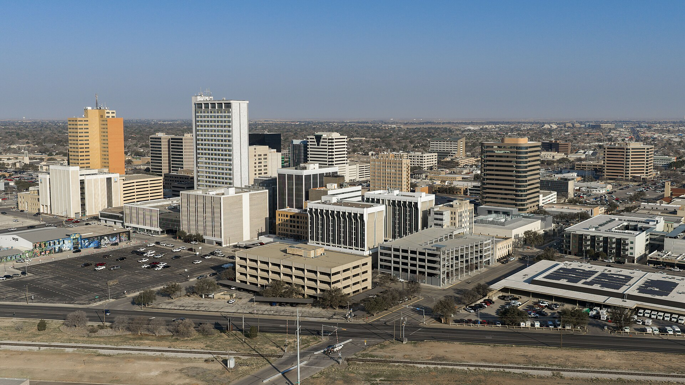
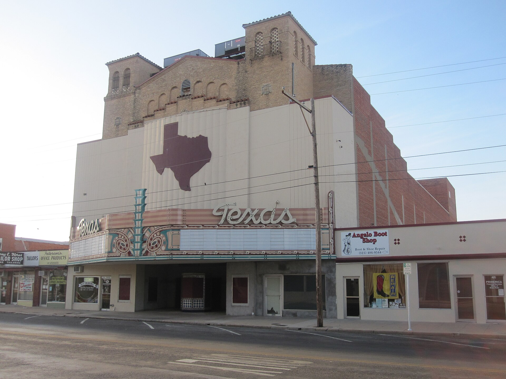

Commercial HVAC service in West Texas
Preventive maintenance and 24-hour service for commercial and industrial buildings in Lubbock, Midland/Odessa, Abilene and San Angelo. Family owned and operated since 1924.
- 4
- offices across West Texas
- 24h
- technicians on call for emergencies
What your HVAC costs you
The HVAC systems in a building can account for up to 40% of the total energy bill. Slide to your monthly bill.
$3,200
a month can go to heating and cooling. An inefficient system makes that number bigger. Preventive maintenance keeps it down.
Up to 40%: from Anthony Mechanical's own guidance. Your share depends on the building.
Preventive maintenance
The core of what we do: maintain your system properly so it lasts longer, uses less energy and doesn't break.
Tasked every month
Maintenance is scheduled automatically each month. Nothing waits for someone to remember.
Done to a checklist
Every technician works from a checklist of what needs to be done, so you know it was all done.
Pays for itself
A properly maintained system uses less energy than one that isn't.
24-hour emergency service
Locally owned and operated, with the largest crew of commercial technicians on the South Plains.
Four offices, one call away
Pick your area to see who answers and the number to call.

Lubbock
806-765-7373525 E. 40th Street, Lubbock, TX 79404
- President/General Manager: Matthew Anthony
- Service Manager: Joe Caldwell
- Dispatcher: Danyelle Nance
Pictured: Lubbock.
A hundred years


Midland, Abilene and San Angelo: the cities the Lubbock company grew into.
- 1924
J.F. "Doc" Anthony leaves the Santa Fe Railroad and starts Anthony Plumbing in Lubbock, a town of 10,000. His father, a windmill mechanic, joins him.
- 1946
His son Bill joins as a partner after university and the Navy. In 1953 he becomes a charter member of the ASHRAE West Texas Chapter.
- 1967
The Anthony Company becomes Anthony Mechanical, Inc.
- 1982
John Anthony starts Anthony Mechanical Services, which joins the Linc Service Network.
- 1996
Linc names the Lubbock office Franchise of the Year for customer satisfaction and growth.
Commercial HVAC questions
Do you offer 24-hour commercial HVAC service?
Yes. Our technicians are available 24 hours a day in case of an emergency, in Lubbock, Midland/Odessa, Abilene and San Angelo.
What does preventive maintenance include?
Maintenance is tasked automatically each month and every technician works from a checklist, so nothing is missed. It extends the life of your equipment and lowers energy use.
How fast can you get to my building?
We can't promise an exact time, but we have the largest crew of technicians working on commercial buildings on the South Plains, so we get someone to you as soon as possible.
How much of a building's energy bill is HVAC?
The HVAC systems in a building can account for up to 40% of the total energy bill.